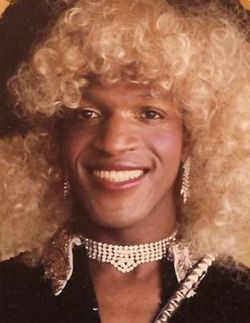

Harriet Tubman (1820-1913)
“I had reasoned this out in my mind, there was one of two things I had a right to, liberty or death; if I could not have one, I would have the other.”
Born in Maryland between 1920 and 1925, Tubman is the most famous Underground Railroad “conductor” and was an abolitionist, leader of armed forces, and spy for the Union during the American Civil War.
Tubman was born a slave--when she was young, three of her sisters were sold away, but her brother was kept with the family when her mother successfully protested the sale. Her father was technically freed at 45 when his owner died and mandated it in his will, but the rest of the family was still enslaved; as such, he had little option but to continue working for the owner’s family.
Tubman and her family were regularly abused by their owners, including lashings, which left lifelong scars. A brain injury as a teenager from an overseer’s strike with a weight gave her narcolepsy, seizures, and severe headaches. At around 24, she married a free black man, but he declined to travel the Underground Railroad with her on her quest for freedom; she later remarried once free. She made 19 trips back and forth along the Railroad, freeing more than 300 people. Later she led forces in the Combahee River Raid in South Carolina, which freed over 700.
By 2026, Tubman is set to replace Andrew Jackson on the $20 bill.
Joan of Arc (1412-1431)
“I am not afraid; I was born to do this.”
During the Hundred Years’ War, Joan of Arc came from poverty and obscurity to lead France’s army at Orléans against England, who sought to conquer it. Joan was born a peasant in Domrémy, France. She claimed that the saints spoke with her directly and, at 16, traveled to Vaucouleurs convinced that her calling was to join the Dauphin, the eldest son of King Charles VI. Eventually, she was able to meet with him and tell him of her desire to battle the English and see him become king. Joan went on to lead many sieges.
Joan was eventually tried as a heretic partly for her claims of correspondence with God and partly for her support of Charles VII--she was executed, but was later canonized as a saint for her courage.
Rosa Parks (1913-2005)
“You must never be fearful about what you are doing when it is right.”
Living in Montgomery, Alabama, at the time of her protest, Parks is known for refusing to leave the back of a segregated bus and give her seat to a white passenger. Parks’ own grandparents were former slaves and staunch advocates against racism; one stark memory of hers recalled her grandfather guarding their house with a shotgun as a Ku Klux Klan rally marched in the street.
As a child, Parks studied in a one-room schoolhouse without sufficient desks and other supplies. She and her black classmates were forced to walk to the schoolhouse, while white students were provided a bus and a special school building. Parks was 42 when she was arrested for refusing to give up her seat; she also lost her job and was sent death threats for years following. In response to her arrest, the black community of her city staged the 381-day Montgomery Bus Boycott, named one of the most successful mass protests against segregation in history. It ended with the Supreme Court ruling bus segregation unconstitutional.
Rosa Parks was awarded the Martin Luther King Jr. Award by the NAACP, the Congressional Gold Medal, and the Presidential Medal of Freedom.
Lili’uokalani (1838-1917)
“It is for [Hawai’ian children] that I would give the last drop of my blood; it is for them that I would spend, nay, am spending, everything belonging to me.”
Lili’uokalani was the first and only Hawai’ian queen, known for her defense of Hawai’i against unlawful acquisition by the US.
In her childhood, Lili’uokalani received a thorough education, where she traveled the Western world. She became heir at 39, then queen at 53. She opposed American annexation of Hawai’i and was backed by President Grover Cleveland, who criticized “the lawless occupation of Honolulu under false pretexts by the United States forces.” Cleveland attempted to reinstate Lili’uokalani, but Sanford Dole (Hawai’i-born son of American missionaries and politician) defied the order, seeking to become president of the island.
Lili’uokalani eventually abdicated the throne to save unfairly imprisoned Hawai’ians. Though Hawai’i was annexed, Lili’uokalani continues to be praised for her fight and passion for Hawai’i.
Marsha P. Johnson (1945-1992)
“How many years has it taken people to realize that we are all brothers and sisters and human beings in the human race?”
Born in New Jersey, Johnson was an LGBTQ rights activist credited for her role in the Stonewall riots.
Johnson’s legacy lies in her care of homeless LGBTQ youth in New York City. She worked with friend and fellow activist Sylvia Rivera to establish STAR (Street Transgender Action Revolutionaries), a group dedicated to this very purpose. In 1969, Johnson was spotted by many eyewitnesses being one of the main leaders of the Stonewall riots, a days-long protest and uprising in response to questionable, needlessly brutal, targeted, and intentionally public arrests of LGBT people and activists by police. This rebellion came to be nicknamed the first Pride parade.
Buffalo Calf Road Woman (1844-1879)
“A nation is not conquered / Until the hearts of its women / Are on the ground.” - Cheyenne Proverb
Buffalo Calf Road Woman, or Brave Woman, was a Cheyenne warrior known for the rescue of her brother Chief Comes in Sight during the Battle of the Rosebud.
Upon seeing General Crook and his men approaching her village in 1876, Buffalo Calf Road Woman insisted upon riding with the other warriors. The battle was difficult--Cheyenne and Lakota began to retreat, leaving Chief Comes in Sight since he was stuck in a gully and it seemed he was impossible to save. Buffalo Calf Road Woman saw her brother there and suddenly rode full speed into the fray to pull him onto her horse and rescue him. This rallied the warriors, and they defeated Crook and his men. The other warriors later honored her bravery by naming the battle “The Fight Where the Girl Saved Her Brother.”
Buffalo Calf Road Woman also fought in the Battle of Little Bighorn a week later, where she is credited with having saved another warrior and knocking Lieutenant Colonel Custer, leader of a massacre of a Native village, from his horse.